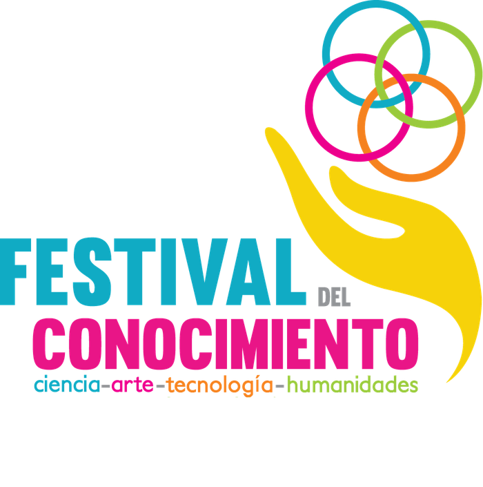
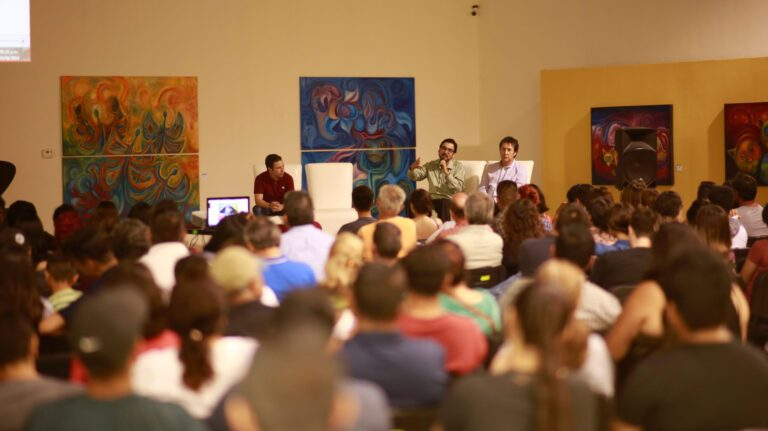

Ciencia
Charlas de divulgación, laboratorios abiertos, astronomía, nanociencia y el placer de preguntar por qué.

17—24 octubre 2026
Una iniciativa de
Ocho días de conferencias, conciertos, talleres, teatro y caminatas del conocimiento en toda la ciudad. Entrada libre.
Ensenada, Baja California · XI Edición
El festival
El Festival del Conocimiento es una iniciativa multidisciplinaria de divulgación de la ciencia, la tecnología, las artes y las humanidades que se realiza cada año en Ensenada, Baja California.
Lo impulsa el Centro de Nanociencias y Nanotecnología de la UNAM (CNyN-UNAM) junto con instituciones educativas, autoridades locales, organizaciones civiles y empresas, y acerca el saber a toda la comunidad con actividades abiertas y gratuitas: conferencias, talleres, charlas de divulgación, caminatas del conocimiento, conciertos, presentaciones artísticas, mesas de diálogo y encuentros familiares que unen ciencia y arte. Todo con un mismo propósito: fomentar la apropiación social del conocimiento, fortalecer vocaciones científicas y creativas, y provocar encuentros entre la comunidad científica, artistas, estudiantes y familias.

Charlas de divulgación, laboratorios abiertos, astronomía, nanociencia y el placer de preguntar por qué.
Teatro, danza contemporánea, conciertos, exposiciones e intervenciones artísticas en espacios públicos.
Talleres prácticos, innovación, emprendimiento y demostraciones que se tocan, se arman y se prueban.
Mesas de diálogo, historia, filosofía, literatura y las conversaciones que nos ayudan a vivir juntos.
Edición 2026
En diversas sedes de la ciudad de Ensenada se podrá disfrutar de manera gratuita de:
La planeación de la edición 2026 avanza con la participación del CNyN-UNAM, el Instituto Tecnológico de Ensenada del TecNM y las demás instituciones aliadas. El programa completo y las sedes se anunciarán próximamente.
Programa
Próximamente
El programa completo —con horarios, sedes, invitados y registro de boletos— se publicará en esta página conforme se confirme cada actividad. Mientras tanto, la forma más rápida de enterarte es seguirnos en redes: ahí anunciamos primero cada anuncio del festival.
¿Eres docente o representas una institución? Escríbenos para recibir el programa en cuanto esté listo → Participa
Video
Un recorrido por lo que ocurre cuando la ciencia, el arte, la tecnología y las humanidades se encuentran en Ensenada.
Memoria
Del 21 al 27 de septiembre de 2025 el festival celebró su décima edición bajo el eje “Talento de la Región”, con actividades en Ensenada y actividades hermanas en Mexicali y Valle de las Palmas. Esto fue parte de lo que se vivió.
Dos rutas de apertura: del Museo Caracol a la cancha del CNyN-UNAM, y un recorrido guiado por el centro histórico de Ensenada.
Euphoria Brass Band en la inauguración, el cantautor Yayo González, danza contemporánea y el cierre con Son del Puerto.
Charlas sobre 100 años de mecánica cuántica, nanotecnología y energía, y proyectos de nanoemprendimiento con enfoque social y ambiental.
Presentaciones de libro, mesas de diálogo, talleres y dinámicas sensoriales abiertas a todo público.
Da clic en cualquier cartel para verlo completo.
Galería
Once años de encuentros entre la comunidad científica, artistas, estudiantes y familias.
Sedes
No hay un solo recinto: el festival se reparte por los espacios culturales, académicos y públicos de Ensenada. Estas han sido algunas de sus sedes.
Las sedes de la edición 2026 se confirmarán junto con el programa. El listado anterior corresponde a recintos que han albergado ediciones previas.
Participa
Cada edición es posible gracias a instituciones, autoridades, organizaciones civiles, empresas, divulgadores, artistas y voluntarios que suman su trabajo. Si quieres formar parte de la edición 2026, hay lugar para ti.
¿Tienes una charla, taller, obra o exposición? Cuéntanos de qué trata, a qué público va dirigida y qué necesitas.
Espacios, equipo, difusión o apoyo económico: toda colaboración amplía el alcance del festival.
Logística, registro, acompañamiento de invitados y apoyo en sedes. Es la mejor forma de vivir el festival desde dentro.
Coordinamos visitas y actividades de divulgación con instituciones educativas de todos los niveles.
Coordinación general
Mtro. Juan Antonio Peralta
jperalta@ens.cnyn.unam.mxCentro de Nanociencias y Nanotecnología · UNAM · Ensenada, B.C.
Redes
Los anuncios del programa, invitados y boletos salen primero en nuestras redes sociales.